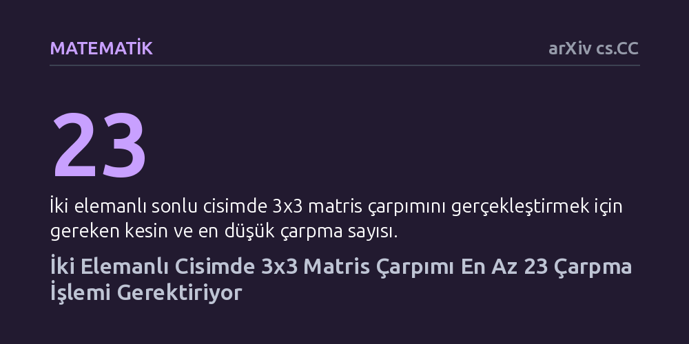

MATEMATIK · arXiv cs.CC · 2026-10-10
Araştırmacı, iki elemanlı sonlu cisimde 3x3 matris çarpımının 22 temel işlemle yapılıp yapılamayacağını araştırdı. Geliştirilen cebirsel kısıtlar ve biçimsel bilgisayar kanıtıyla bu işlemin en az 23 çarpma gerektirdiği kesinleştirildi.
Ellinci yılına yaklaşan Laderman algoritmasının iki elemanlı cisimde daha az çarpmayla aşılamayacağını kesinleştirerek matris çarpımının kuramsal sınırlarını netleştirdi.

İki matrisi birbiriyle çarpmak, bilgisayar biliminin ve modern veri işlemenin en temel yapı taşlarından biridir. Okulda öğretilen standart yöntemle 3x3 boyutunda iki matrisi çarpmak için 27 adet bağımsız çarpma işlemi gerekir. Ancak 1976 yılında Julian Laderman, zekice kurgulanmış bir cebirsel yöntemle bu işlemi 23 çarpmaya indirmeyi başarmıştı. O tarihten bu yana matematikçiler şu sorunun peşindeydi: 23 sayısı gerçekten aşılamaz bir sınır mıdır, yoksa 22 çarpmayla da bu işlem yapılabilir mi?
Yakın zamanda Rudich ve Rousseau, sadece 0 ve 1 sayılarından oluşan iki elemanlı sonlu cisimde bu çarpmanın en az 22 işlem gerektirdiğini kanıtlamıştı. Bu gelişme geriye tek bir belirsizlik bıraktı: Cevap 22 miydi, yoksa 23 mü? Bu soru hem teorik bilgisayar biliminde algoritmaların sınırını anlamak hem de temel cebirsel işlemlerin karmaşıklığını netleştirmek açısından büyük önem taşıyordu.
Olası tüm matris kombinasyonlarını körü körüne denemek, devasa arama uzayı nedeniyle en güçlü bilgisayarlar için bile imkânsızdır. Araştırmacı bu engeli aşmak için ikame yöntemini ve tensör geometrisini kullandı. Matris uzayının simetri sınıflarını inceleyerek olası bir 22 adımlı çözümün sağlaması gereken çok sıkı yapısal kurallar türetti.
Özellikle Wang tarafından daha önce sınıflandırılan 496 alt uzay simetri sınıfının 111 tanesinde bilinen alt sınırlar yukarı çekildi. Ayrıca tensörün 27x27 boyutundaki düzleştirilmiş biçimi ve rank kısıtları kullanılarak, 22 faktörden oluşan bir çözümün taşımak zorunda olduğu özellikler daraltıldı. Böylece devasa olasılık uzayı, bilgisayarla incelenebilecek sonlu ve yönetilebilir aday kümelerine indirgendi.
Belirlenen matematiksel kısıtları sağlayan 22 matrislik olası aday kümeleri, simetri farkları gözetilerek bilgisayarla listelendi. Ardından yapılan kesin tamamlama taraması, bu aday kümelerinin hiçbirinin 3x3 matris çarpımını temsil eden tensörü oluşturamadığını gösterdi. Başka bir deyişle, 22 çarpmalı bir çözümün matematiksel olarak var olamayacağı kesinleşti.
Hesaplamaların güvenilirliğini sağlamak amacıyla arama sürecinde matematiksel sertifikalar üretildi. Bu sertifikalar, Lean 4 adlı biçimsel kanıt asistanında çalışan ve doğruluğu matematiksel olarak kanıtlanmış denetleyicilerle kontrol edildi. En kapsamlı kontroller derlenmiş kod olarak çalıştırıldı ve böylece hesaplama hatası ihtimali en aza indirildi.
Elde edilen bulgu, Laderman'ın 1976'da önerdiği algoritmanın iki elemanlı cisim üzerinde ve tamsayı katsayıları kullanıldığında en az çarpmayı gerektiren yöntem olduğunu kesinleştirdi. Yani ikili sistemde 3x3 matris çarpımı için gereken tensör rankı tam olarak 23'tür; 22 çarpma ile bir çözüm arayışı bu koşullar altında resmen kapanmış oldu.
Yine de matris çarpımının kuramsal sınırları tamamen çözülmüş değil. Bu çalışma iki elemanlı cismi ve tamsayı katsayılarını ele alıyor; gerçel veya karmaşık sayılar gibi farklı cisimlerde 23'ten daha az çarpmanın mümkün olup olmadığı sorusu hâlâ açıktır. Ancak geliştirilen tensör kısıtlama teknikleri, gelecekte farklı boyut ve cisimlerdeki araştırmalara sağlam bir yöntem sunuyor.